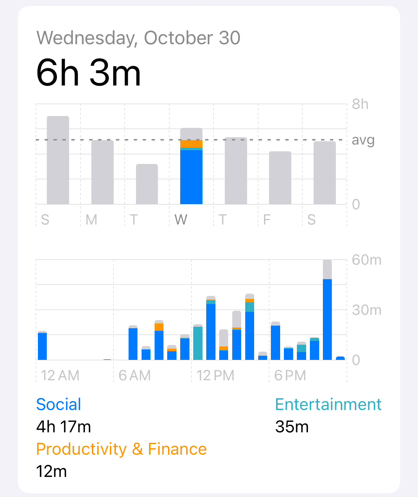
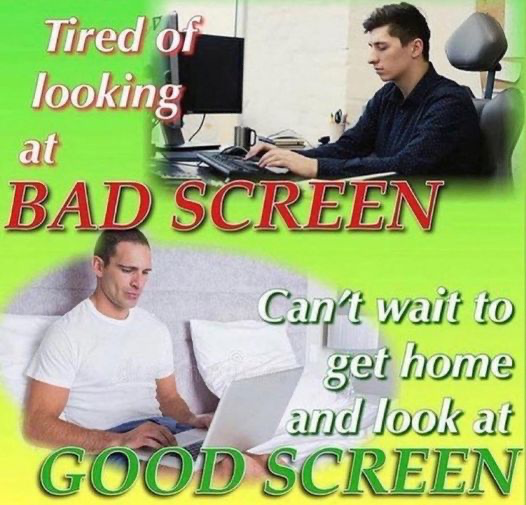

On screens
Posted on Nov 04 2024
I want to get away from screens.
As a Software Engineer, I am staring at a computer screen for 12+ hours a day because it’s part of my job. That’s half of the 24 hours available every day. Ok, I can cope with that. It’s not like i’m messing around right? I am literally working so I can survive in this world.
6 to 7 hours out of those 24 are spent sleeping. Ok, I can cope with that. I need to sleep so I can work.
Then, I get home (or close the lid if working from home). I need to check if course and get up to date with what’s going on, from family, friends and news (tech news, mostly). That converts to the remaining 6 hours of my day if i’m completely honest. Proof below.
I’m literally this guy.
I currently feel that I have little to no time for reading. No time for family. No time to see the world. It’s sucking my energy and screens have become the central part of my life. I don’t want that.
I want to change this. I don’t mean to stop every single screen or change my career or even being offline forever. Nothing like that. I love my career and I would never change it. I just want to get away from screens as much as I can make a better use of the time I can control, beyond my job.
Planing changes on my routine is the easy part. That is done, now applying those changes it’s the challenge i want to dive in by the end of this year. I could share the plan here so I feel a little bit of pressure as my digital footprint will haunt me for saying things i don’t make up to.
I can write a lot more about this but point has been cleared out.
Touch grass.
Wish you the best, Waldo.